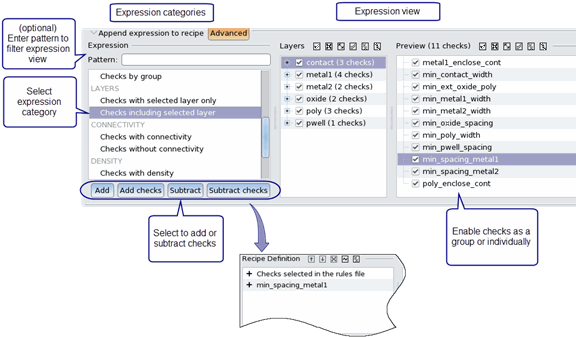

The advanced
editing controls in the Recipe Editor allow you to select checks
by layer and group, apply a wildcard filter, and select and unselect
individual rule checks.
Custom check recipes (also
called user recipes) allow you to control which Calibre rule checks are
executed during a Calibre nmDRC or Calibre nmLVS run. Check recipe
definitions are saved in the Calibre Interactive runset, along with
the currently active check recipe.
Procedure
- Open a recipe for editing
and make selections using the basic editing controls, as described
in “Basic Editing of Custom Check Selection Recipes”.
- Click the Advanced button
to expand the advanced editing controls if they are not visible.
The page should look similar to that shown in Figure 2 in “Recipe Editor Page”.
- Do the
following to add an expression to the recipe definition:
- Choose
an expression category in the left pane in the Expression area.
- (Optional)
You can add and subtract individual checks from the expression category selected
in Step a. In the Preview pane on the right, select and unselect
checks. The view in this area depends on the expression category
and on the Pattern field; wildcard expressions are supported. You
can use the following methods to select checks:
- Click one of the following buttons to update
the check recipe definition:
Add — Adds
the expression and any modifications from the Preview pane.
Add checks —
Adds the checks selected in the Preview pane as a list of rule checks.
Subtract —
Subtracts the expression and any modifications from the Preview pane.
Subtract checks —
Subtracts the checks selected in the Preview pane as a list of rule
checks.
Note: Recipes built with expressions
can often be used with a different rule file, unlike recipes that
list individual rule checks.
Figure 1. Adding a Recipe Expression
- Repeat
Step 3 as necessary to add more expressions
to the check recipe definition.
- View the check
recipe in the Recipe definition area. You can use the buttons
to move an expression up or down in the list, remove an expression,
resolve an expression into the equivalent list of rule checks, or
remove all recipe expressions.
Tip If you
want to only run checks that are selected in the rule file when
using a custom check recipe, go to the Expression area, select “Checks
not selected in the rules file,” select “Subtract,” and click the Apply button. Make sure the expression
“- Checks not selected in the rules file” is the last expression
in the recipe definition.
- View the list of included
and excluded checks in the Recipe checks area. A Groups tab is
included if check groups are created in the rule file (the Group statement).
A green
check mark indicates that the rule check or group is included in
the recipe. A red empty space indicates the item is not included.
Click in the checkbox next to an item to include or exclude it from
the recipe.
In the Recipe
Checks area you can right-click for a menu to add and subtract checks. You
can also enter a filter pattern to filter the rule checks.
- (Optional)
Click Export to save the check recipe to
a file. The recipe file can be imported by other users with the Import button.
Saved DRC check recipes can be imported by Calibre RealTime Custom and Calibre RealTime Digital.
- Click Apply.
Tip If you edited a built-in
recipe, you can click the Rename button to
give the modified recipe a new name.
- (Recommended) Choose to
save the recipe definition to a runset.
Tip You must either save a runset
or export the recipe to a file if you want the new check recipe
to be available in later sessions of Calibre Interactive.